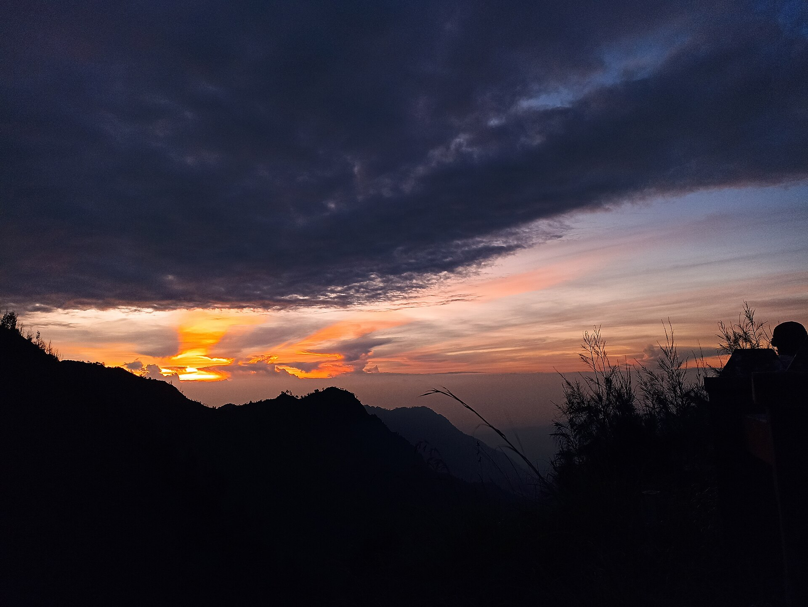
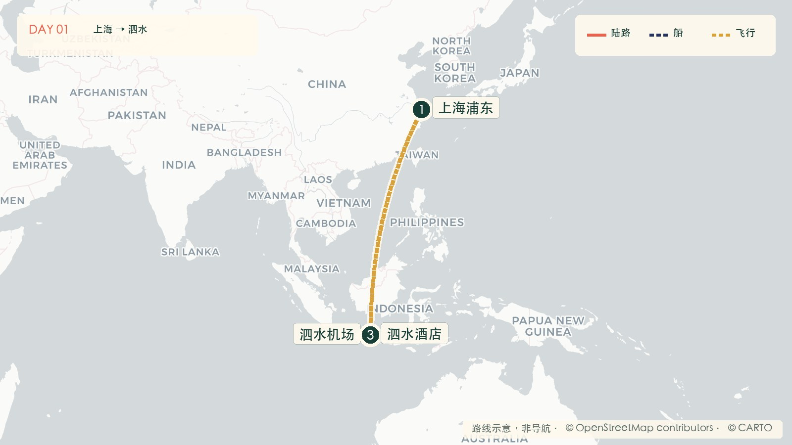

Mövenpick Surabaya City
到达日优先睡眠和接车便利，不追求景区氛围。
约 ¥900—1,400 备选：Four Points by Sheraton Surabaya, Pakuwon IndahINDONESIA · 09.27—10.06
3 人 · 2 间房 · 泗水进 / 科莫多出
从完整地球飞入 3D 微缩岛屿，一屏看懂当天全部停靠点、路线与交通方式。
09.27 · SUN
上海浦东 → 短转机 → 泗水机场 → 市区酒店


到达日优先睡眠和接车便利，不追求景区氛围。
约 ¥900—1,400 备选：Four Points by Sheraton Surabaya, Pakuwon Indah只买一张联程票。落地延误也不要继续赶四小时山路。